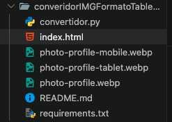
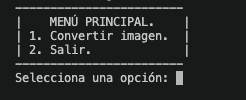
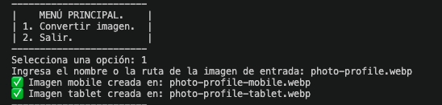
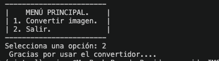

Optimiza tus imágenes para la web con este script Python simple y eficiente.
Este proyecto es un script en Python que permite convertir imágenes a formato WebP optimizado para dispositivos móviles y tablets. Utiliza la librería Pillow para manipular las imágenes y genera versiones redimensionadas para móvil (400x400 píxeles) y tablet (800x800 píxeles). Ideal para desarrolladores web que buscan mejorar el rendimiento de sus sitios al reducir el tamaño de las imágenes sin perder calidad.
Es recomendable usar un entorno virtual para aislar las dependencias del proyecto.
En la terminal, navega al directorio del proyecto:
cd converidorIMGFormatoTableMovilCrea un entorno virtual:
python3 -m venv venvActiva el entorno virtual:
source venv/bin/activatevenv\Scripts\activateInstala las dependencias desde el archivo requirements.txt:
pip install -r requirements.txtEsto instalará Pillow y cualquier otra dependencia necesaria.
python convertidor.pyimagen.jpg o /ruta/a/imagen.png).imagen-mobile.webp (400x400 píxeles)imagen-tablet.webp (800x800 píxeles)A continuación se muestra el flujo de ejecución de la aplicación con capturas de pantalla:
Antes de ejecutar la aplicación, asegúrate de tener la estructura correcta del proyecto:

Cuando ejecutas el script con python convertidor.py, se mostrará el menú principal con las opciones disponibles:

Selecciona la opción 1 para convertir una imagen. Ingresa la ruta de la imagen y el script procesará la conversión:

Cuando termines de convertir imágenes, selecciona la opción 2 para salir:

Este proyecto es de uso libre. Modifícalo según tus necesidades.